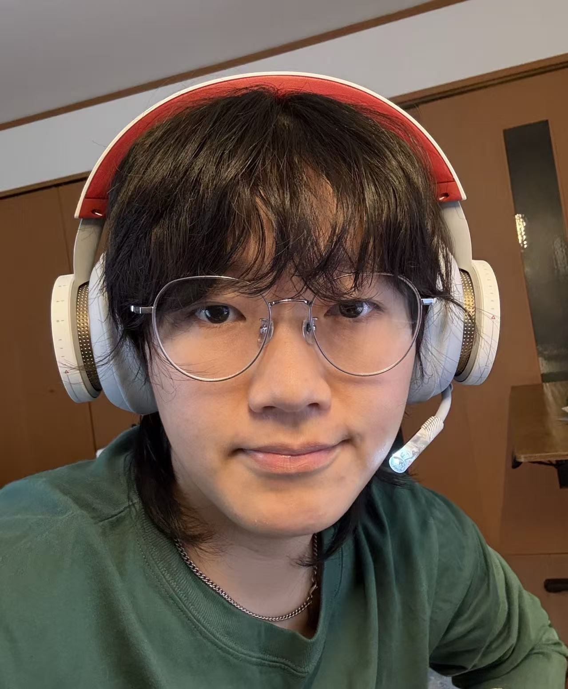
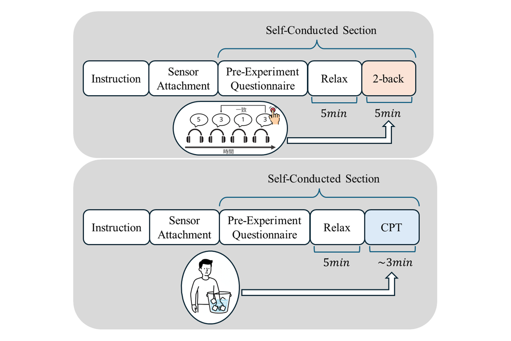
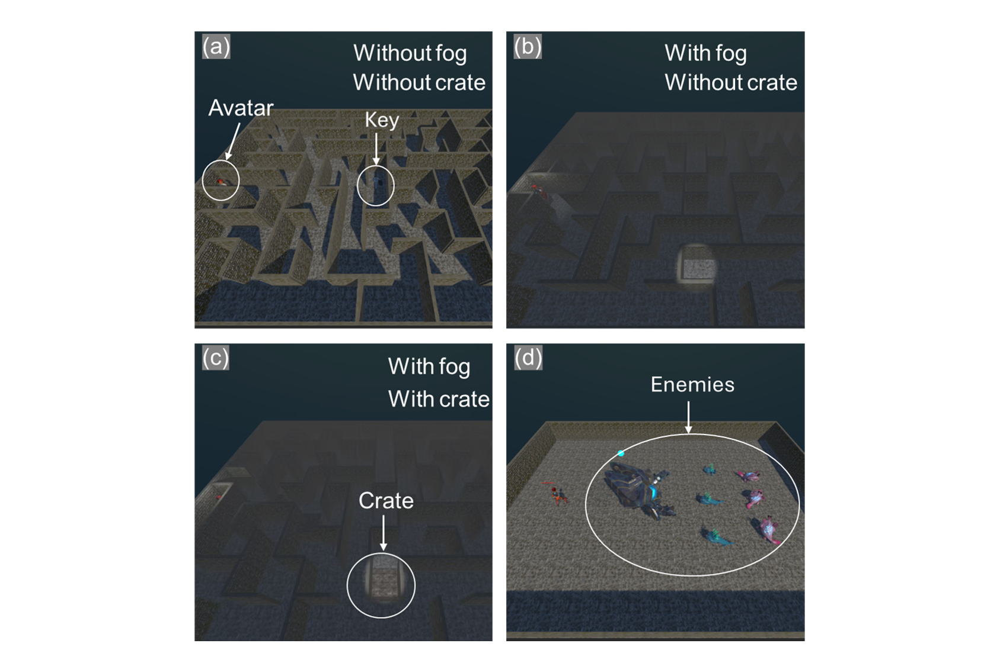
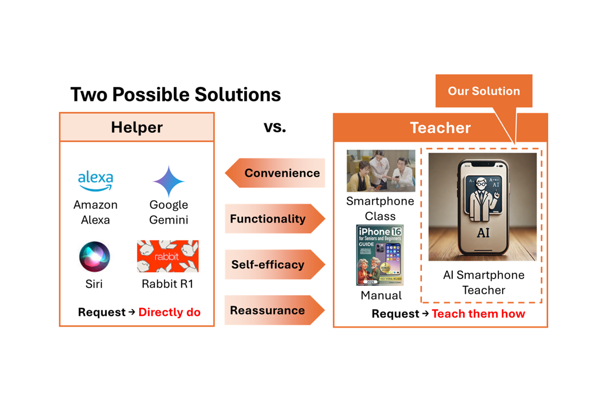

I am a PhD candidate at the University of Tokyo (UTokyo), HeiLab, advised by Prof. Shin'ichi Warisawa and Prof. Yuki Ban, focusing on research in multimodal estimation of user states using physiological and behavioral signals and the sense of body ownership (SoBO) in VR.
My research interests include user-state estimation, human-computer interaction, virtual reality technologies, applications of artificial intelligence and adaptive interactive systems.
私は東京大学（UTokyo）のHeiLabに所属する博士課程の学生で、割澤伸一教授と伴祐樹准教授の指導の下、生理学的・行動的信号を用いたユーザー状態のマルチモーダル推定およびVRにおける身体所有感（SoBO）に関する研究を行っています。
研究分野：ユーザー状態推定、ヒューマンコンピュータインタラクション、バーチャルリアリティ技術、人工知能の応用、適応型インタラクティブシステム。
我是东京大学（UTokyo）HeiLab的博士研究生，师从割泽伸一教授和伴祐树副教授，目前专注于利用生理和行为信号进行用户状态的多模态估计以及VR中的身体所有感（SoBO）的研究。
我的研究兴趣包括用户状态估计、人机交互、虚拟现实技术、人工智能应用以及自适应交互系统。
Projects
研究プロジェクト
研究项目



Education
学歴
教育背景
Thesis: Chronic Stress Estimation Using Behavioral Metrics and Physiological Signals Under Cognitive and Physical Loads
論文タイトル：認知的・身体的負荷時における行動指標及び生体情報を用いた慢性ストレス推定
硕士论文：基于认知与身体负荷下的行为指标及生理信号的慢性压力评估
Research Lab: HeiLab
研究室：HeiLab
所属研究室：HeiLab
Thesis: Behavior decision of heterogeneous agent based on Goal-Plan Tree
卒業論文：Goal-Plan Treeに基づく異種エージェントの行動決定
本科论文：基于目标-计划树的异构智能体行为决策
Publications
発表論文
发表论文
Conference Papers
国際・国内会議
会议论文
Patents
特許
专利
Awards & Honors
受賞歴
获奖荣誉
2024 年度東京大学グローバル・インターンシップ・プログラム（UGIP）ソフトバンク（株）企画 データハッカソン「生成 AI を活用した未来のライフスタイルを考えよう」
Skills
スキル
技能
Languages
言語
语言
- Chinese (Native)中国語 (ネイティブ)中文 (母语)
- Japanese (Business)日本語 (ビジネスレベル)日语 (商务水平)
- English (Business)英語 (ビジネスレベル)英语 (商务水平)
Programming & AI
プログラミング & AI
编程与人工智能
- Python, C#, C++, C, Java, Matlab, SQL
- PyTorch, TensorFlow, scikit-learn
Signal Processing
信号処理
信号处理
- Time-series Analysis時系列分析时间序列分析
- Real-time biosignal data acquisition (e.g., Biosignalsplux)リアルタイム生体信号計測 (例: Biosignalsplux)实时生物信号采集 (如: Biosignalsplux)
Contact
連絡先
联系方式
- 4600144648@edu.k.u-tokyo.ac.jp
- University of Tokyo, Japan东京大学，日本